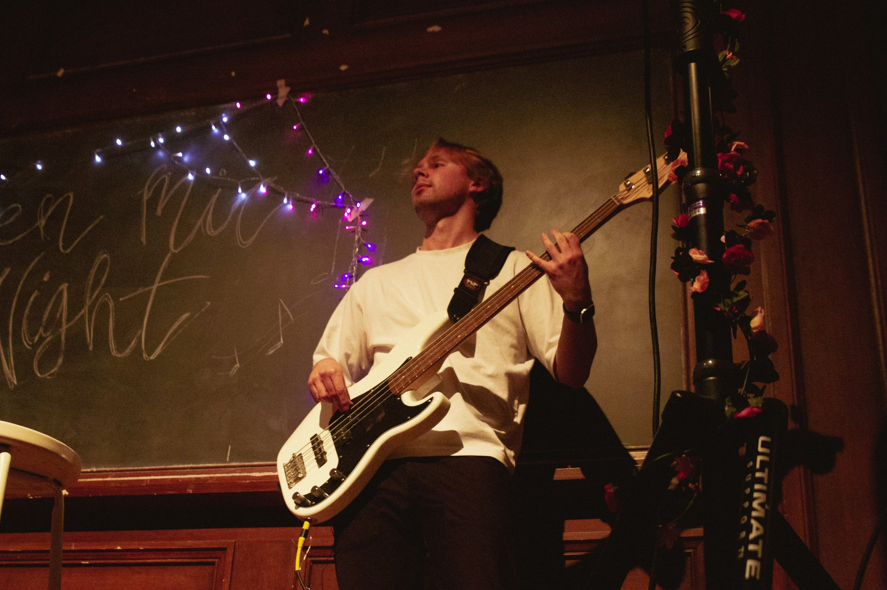
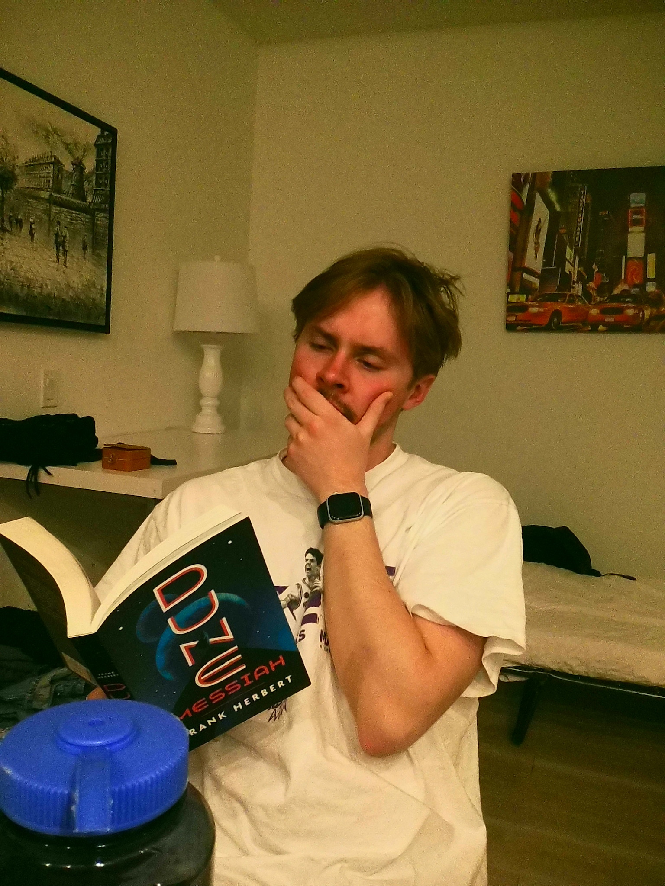
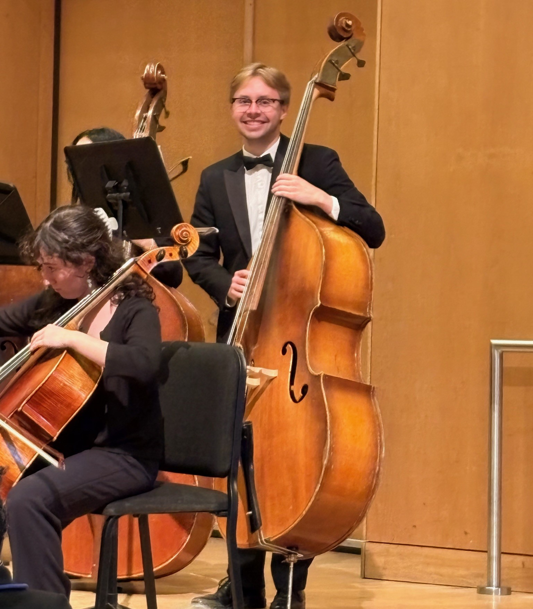
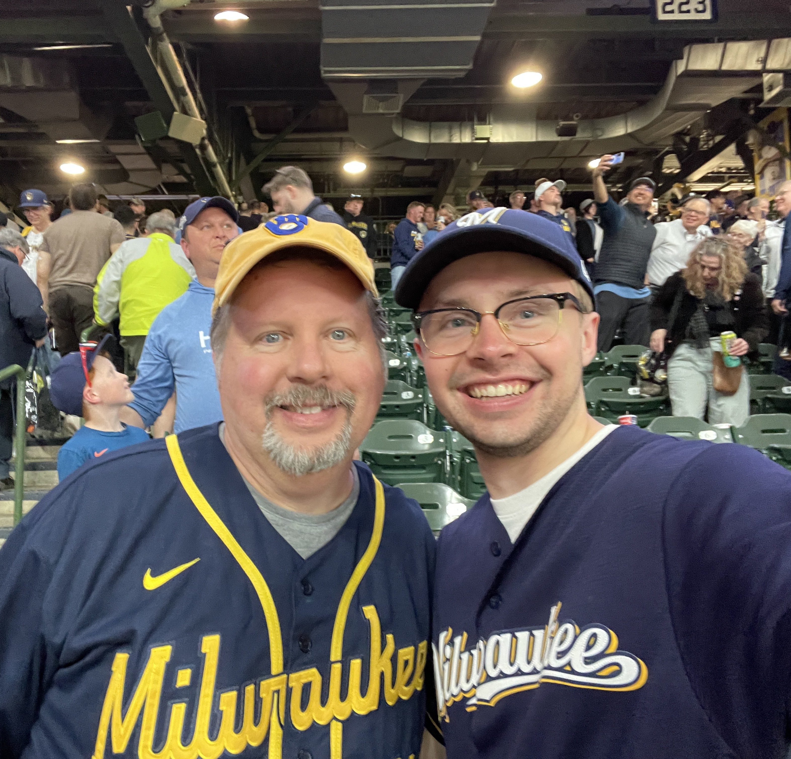
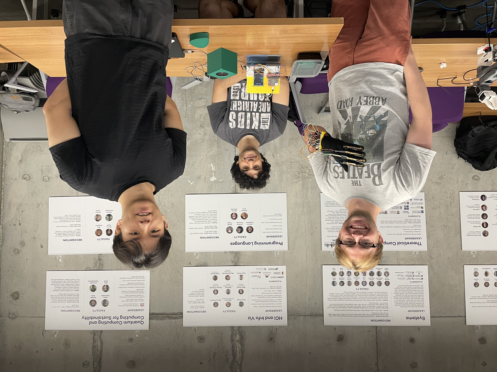
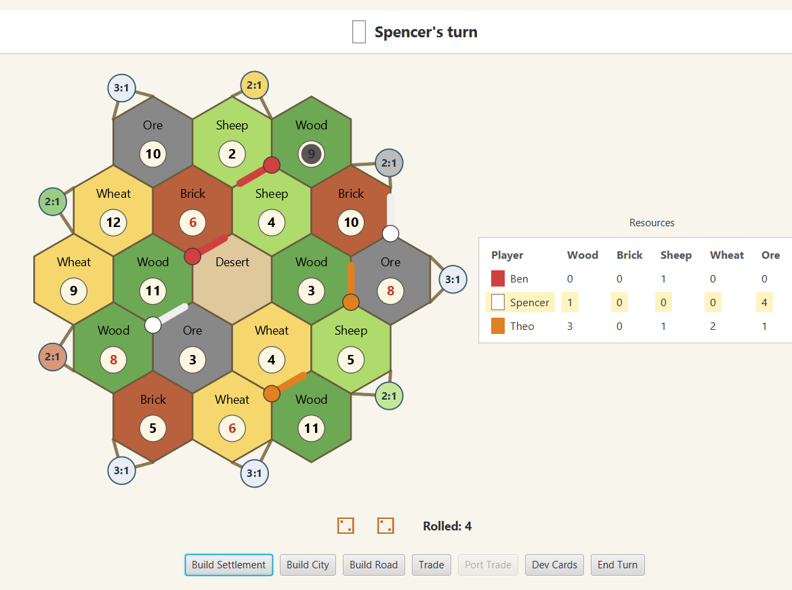
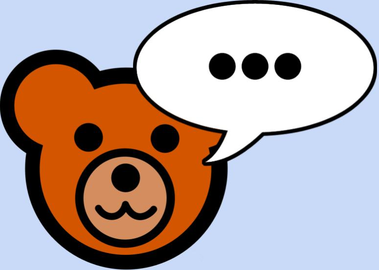
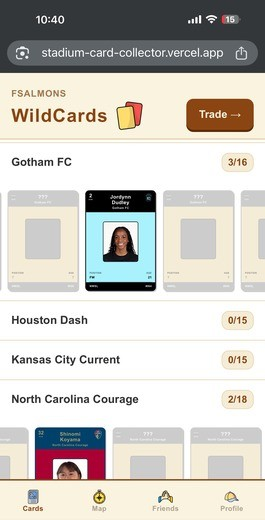
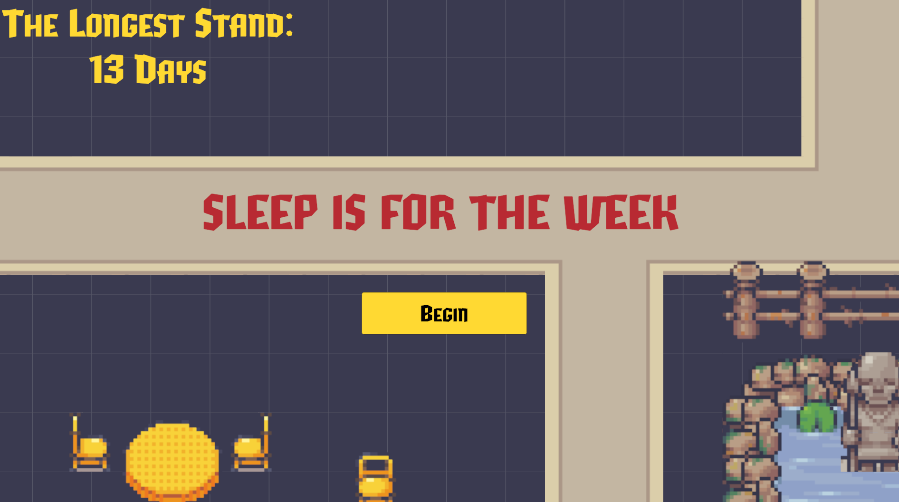
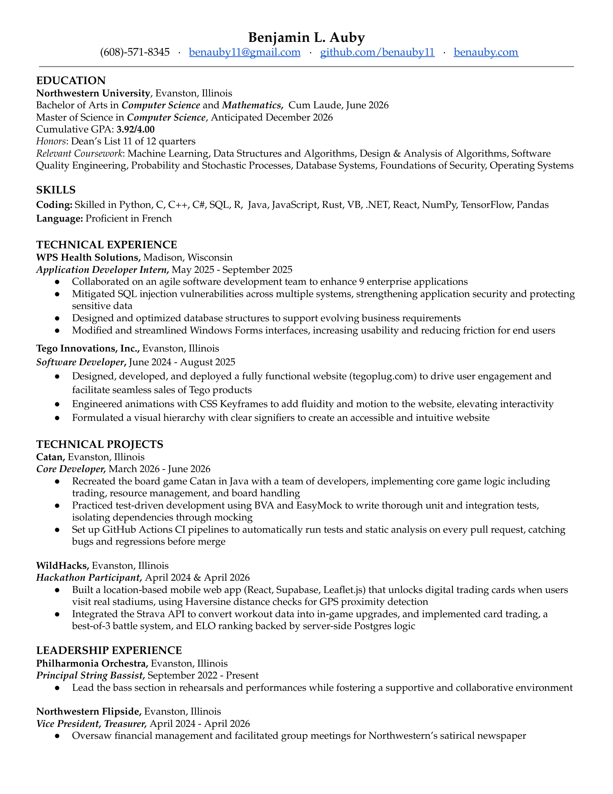

About Me
Hi! My name is Ben, and I'm originally from Madison, Wisconsin. I graduated from Northwestern in June 2026 with a degree in Computer Science and Mathematics, before sticking around to complete my Master's in CS by December 2026. I enjoy CS because I love collaborative problem solving, and have found my favorite coding experiences always involve classmates and me hunkering down for hours on end.
I'm currently looking for early career software engineering roles starting in 2027! The languages that I'm most familiar with are Python and C++, though I also frequently use Java, JavaScript, C, and C#. Last summer, I was at WPS Health Solutions as an application developer intern, writing code for over nine enterprise applications using VB.NET, C#, and SQL.
Outside of coding, I really enjoy playing music, whether it be upright bass in Northwestern's Philharmonia Orchestra, electric bass in my band, or a combination of both in student productions on campus. This past year, I played in Pippin as well as an entirely student-written production titled The Ballad of Ricky Jo. I also enjoy playing tennis and softball, watching baseball (Go Brewers!), and reading.
If you'd like to connect or collaborate, please feel free to get in touch.




Projects

Air Bit-ar
A Guitar Hero–style game utilizing three separate Micro:bits, all communicating wirelessly. One connected to a glove to detect finger flexion, another inside a 3D-printed guitar pick to detect strumming, and a third running the actual game logic and display.
We converted self-recorded guitar strums into arrays used in PWM cycles for audio playback, and wrote drivers for most of the sensors. One of my favorite projects I've ever worked on!

Catan, built from scratch
A full implementation of the Catan board game, built with a team under strict engineering discipline: test-driven development, boundary value analysis, EasyMock for isolating dependencies, and SpotBugs and CheckStyle enforced on every commit.
I worked on the core game model, classes like BoardHandler, Port, Hex, Robber, and GameModel, and wrote integration and unit tests as the codebase grew.

Teddy Talk
A real-time conversational teddy bear built for children, aimed at childhood education and companionship. We utilized the OpenAI Realtime API and streamed over WebRTC for low-latency, natural-feeling conversation.
I built content moderation and SMS-based parental notifications, instantly texting parents transcripts of flagged content so they have full visibility into their child's conversations.

WildCards
A location-based mobile web app built at WildHacks 2026 that unlocks digital trading cards when users physically visit real stadiums. Think Pokémon Go, but for sports card trading, where real-world workouts (tracked via the Strava API) level up your cards.
I focused on the overall design of the system, as well as integrating battles between players. We decided to utilize Claude to help us build much of the front end of the application, a decision that let us hit a scope well beyond what our time constraints would normally support.

Interactive coral reef
A 3D underwater scene for a computer graphics course, which required OBJ model parsing, Phong lighting, texture mapping, caustic light patterns on the seafloor, volumetric light rays through the water, and a skybox cubemap holding it all together.
Time the shark's animation cycle to hunt down and eat a goldfish, or tap spacebar to propel the jellyfish upward. A full camera system lets you move through the scene, with both orthographic and perspective views.

Sleep is for the Week
A Vampire Survivors–style game built for a game design course focused on interactive and progressive gameplay. Waves of enemies scale up as you survive longer, and the player steadily unlocks new abilities and upgrades.
I built four unlockable weapons, each with a distinct attack pattern that changes how you play as your run progresses. I also handled character and camera movement, tuning aspects such as movement smoothing and predictive camera tracking.
Resume
